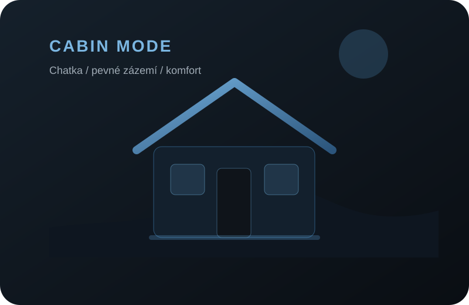

01
01PŘÍJEZDPátek · komunitaPrvní večer, seznamování, auta a hlavně lidi.

Největší sraz BMW E36 v ČR. Nejen parkoviště plné aut — víkend, který si poskládáš po svém.
Tři dny, každý s jiným tempem. Pátek patří příjezdu a komunitě, sobota hlavnímu programu a neděle klidnému zakončení víkendu.


Sobota patří autům, která stojí za druhý pohled. Sedm kategorií BMW E36, výběr nejlepších vozů a porota, která hledá kvalitu provedení, stav, originalitu i celkový charakter auta.
Hlavní sobotní soutěž E36 United. Projdi kategorie, podívej se na vítězné a referenční vozy a zjisti, co porotu při hodnocení opravdu zajímá.
 01 / 07
ACTIVE BODY
01 / 07
ACTIVE BODY
Vítěz 2026 · foto doplníme
Porota postupuje podle stejného seznamu u každého auta. Vyber bod a uvidíš jeho význam rovnou na aktivním voze.

Porota sleduje lícování dílů, návaznosti hran, mezery mezi panely a celkovou kvalitu provedení.
ZPRACOVÁNÍ / SPASOVÁNÍDobře postavený originál i promyšlená úprava mohou fungovat — rozhoduje kvalita, stav, konzistence a výsledný celek.
01
02 04WATCH
04WATCHČtyři praktické odpovědi hned na očích. Pravidla Show & Shine a detail Zbraslavic si otevřeš jen tehdy, když je chceš řešit víc do hloubky.
Ano, pokud přijedeš s BMW E36. Soutěží se v kategoriích Sedan, Coupé, Touring, Cabrio, Compact, Z3 a ///M Power.
Přesná pravidla poroty ↓Rezervace se řeší přes E36 United. V areálu jsou budovy, chatičky i stanové možnosti; Weekend Builder výše ti připraví poptávku podle zvolené varianty.
Ne. Přijet můžeš i jen na hlavní program. Pro plný United zážitek dává největší smysl páteční příjezd a celý víkend v areálu.
Rekreační areál Zbraslavice, Zbraslavice 255, 285 21. Areál leží přibližně 20 km jižně od Kutné Hory, u lesa a Starého rybníka.
Areál, mapa a cesta ↓
Myšlenka se mění ve skutečnost a na první ročník přijíždí přibližně padesát účastníků.

Show & Shine, soutěž o nejlepší výfuk a téměř šedesát krásných E36 na jednom místě.

Po pěti letech přichází nová lokalita a šestý ročník ve Zbraslavicích.
Oficiální video z E36 United 2025. Zvuk doporučujeme zapnout.
Weekend už máme. Doplň jen kontakt a auto, a připravíme celý e-mail za tebe.